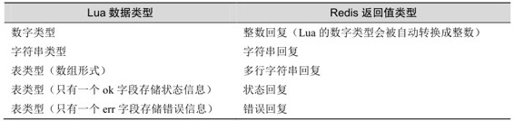

6.3 Redis与Lua
编写Redis脚本的目的就是读写Redis的数据，本节将会介绍Redis与Lua交互的方法。
在脚本中可以使用redis.call函数调用Redis命令。就像这样：
redis.call('set', 'foo', 'bar')
local value = redis.call('get', 'foo') -- value的值为bar
redis.call函数的返回值就是Redis命令的执行结果。第2章介绍过Redis命令的返回值有5种类型，redis.call函数会将这5种类型的回复转换成对应的Lua的数据类型，具体的对应规则如表6-7所示（空结果比较特殊，其对应Lua的false）。
表6-7 Redis返回值类型和Lua数据类型转换规则
Redis还提供了redis.pcall函数，功能与redis.call相同，唯一的区别是当命令执行出错时redis.pcall会记录错误并继续执行，而redis.call会直接返回错误，不会继续执行。
在很多情况下都需要脚本可以返回值，比如前面的访问频率限制脚本会返回访问频率是否超限。在脚本中可以使用return语句将值返回给客户端，如果没有执行return语句则默认返回nil。因为我们可以像调用其他Redis内置命令一样调用我们自己写的脚本，所以同样Redis会自动将脚本返回值的Lua数据类型转换成Redis的返回值类型。具体的转换规则见表6-8（其中Lua的false比较特殊，会被转换成空结果）。
表6-8 Lua数据类型和Redis 返回值类型转换规则

1． 命令
命令
编写完脚本后最重要的就是在程序中执行脚本。Redis提供了EVAL命令可以使开发者像调用其他Redis内置命令一样调用脚本。EVAL命令的格式是：EVAL脚本内容key参数的数量 […] […]。可以通过和这两类参数向脚本传递数据，它们的值可以在脚本中分别使用 KEYS 和 ARGV 两个表类型的全局变量访问。比如希望用脚本功能实现一个SET命令（当然现实中我们不会这么干），脚本内容是这样的：
return redis.call('SET', KEYS[1], ARGV[1])
现在打开redis-cli执行此脚本：
redis> EVAL "return redis.call('SET', KEYS[1], ARGV[1])" 1 foo bar
OK
redis> GET foo
"bar"
其中要读写的键名应该作为参数，其他的数据都作为参数。具体的原因会在6-4节中介绍。
注意 EVAL命令依据第二个参数将后面的所有参数分别存入脚本中 KEYS和 ARGV两个表类型的全局变量。当脚本不需要任何参数时也不能省略这个参数（设为0）。
2．命令
考虑到在脚本比较长的情况下，如果每次调用脚本都需要将整个脚本传给 Redis 会占用较多的带宽。为了解决这个问题，Redis 提供了 EVALSHA命令允许开发者通过脚本内容的 SHA1 摘要来执行脚本，该命令的用法和 EVAL 一样，只不过是将脚本内容替换成脚本内容的 SHA1 摘要。
Redis 在执行 EVAL 命令时会计算脚本的 SHA1 摘要并记录在脚本缓存中，执行EVALSHA命令时Redis会根据提供的摘要从脚本缓存中查找对应的脚本内容，如果找到了则执行脚本，否则会返回错误：“NOSCRIPT No matching script. Please use EVAL.”
在程序中使用EVALSHA命令的一般流程如下。
（1）先计算脚本的SHA1摘要，并使用EVALSHA命令执行脚本。
（2）获得返回值，如果返回“NOSCRIPT”错误则使用EVAL命令重新执行脚本。
虽然这一流程略显麻烦，但值得庆幸的是很多编程语言的 Redis 客户端都会代替开发者完成这一流程。比如使用 node_redis 客户端执行 EVAL 命令时，node_redis 会先尝试执行EVALSHA命令，如果失败了才会执行EVAL命令。
本节会结合几个编程语言的Redis客户端，通过实例介绍在应用中如何使用脚本功能。
1．同时获取多个散列类型键的键值
假设有若干个用户的ID，现在需要获得这些用户的资料。用户的资料使用散列类型键存储，所以我们可以编写一个可以一次性对多个键执行HGETALL命令的脚本。
Predis将脚本功能抽象成了Redis的命令，我们可以通过脚本定义自己的命令并像调用其他命令一样调用我们自己写的脚本。首先我们定义HMGETALL（M表示多个的意思）类：
<?php
class HMGetAll extends Predis\Command\ScriptedCommand
{
//定义前多少个参数会被作为 KEYS 变量
//false 表示所有的参数
public function getKeysCount()
{
return false;
}
//返回脚本内容
public function getScript()
{
return
<<<LUA
local result = {}
for i, v in ipairs(KEYS) do
result[i] = redis.call('HGETALL', v)
end
return result
LUA;
}
}
$client = new Predis\Client();
//定义 hmgetall 命令
$client->getProfile()->defineCommand('hmgetall', 'HMGetAll');
//执行 hmgetall 命令
$value = $client->hmgetall('user:1', 'user:2', 'user:3');
2．获得并删除有序集合中分数最小的元素
列表类型提供了LPOP和RPOP两个命令实现弹出操作，然而有序集合类型却没有相应命令。不使用脚本功能的话必须借助事务来实现，比较繁琐，在 Redis 的官方文档中有这样的例子：
zset
$element =zset 0 0
MULTI
zset $element
EXEC
虽然代码不算长，但还要考虑事务执行失败（即执行WATCH命令后其他客户端修改了zset键）时必须重新执行。
redis-py 客户端同样对 EVAL 和 EVALSHA 两个命令进行了抽象。首先使用 register_script函数建立一个脚本对象，然后就可以使用该对象发送脚本命令了。代码如下：
r = redis.StrictRedis()
lua = """
local element = redis.call('ZRANGE', KEYS[1], 0, 0)[1]
if element then
redis.call('ZREM', KEYS[1], element)
end
return element
"""
ztop = r.register_script(lua)
# 执行我们自己定义的 ZTOP命令并打印出结果
print ztop(keys=['zset'])
3．处理JSON
3.2节介绍字符串类型时曾提到可以将对象JSON化后存入字符串类型键中。如果需要对这些对象进行计算，可以使用脚本在服务端完成计算后再返回，既节省了网络带宽，又保证了操作的原子性。
下面介绍使用脚本功能实现统计多个学生的课程分数总和。首先我们定义一个学生类，包括姓名和该学生的所有课程分数：
//学生类的构造函数，参数是学生姓名
function Student(name) {
this.name = name;
this.courses = {};
}
//添加一个课程，参数为课程名和分数
Student.prototype.addCourse = function(name, score) {
this.courses[name] = score;
}
而后我们创建两个学生实例并为其添加课程：
//创建学生 Bob，为其添加两门课程的成绩
var bob = new Student('Bob');
bob.addCourse('Mathematics', 80);
bob.addCourse('Literature', 95);
//创建学生 Jeff，为其添加两门课程的成绩
var jeff = new Student('Jeff');
jeff.addCourse('Mathematics', 85);
jeff.addCourse('Chemistry', 70);
连接Redis，将两个实例JSON序列化后存入Redis中：
var redis = require("redis");
var client = redis.createClient();
//将两个对象 JSON 序列化后存入数据库中
client.mset(
'user:1', JSON.stringify(bob),
'user:2', JSON.stringify(jeff)
);
现在开始进行最有趣的环节，即编写Lua脚本计算所有学生的所有课程的分数总和：
var lua = " \
local sum = 0 \
local users = redis.call('mget', unpack(KEYS)) \
for _, user in ipairs(users) do \
local courses = cjson.decode(user).courses \
for _, score in pairs(courses) do \
sum = sum + score \
end \
end \
return sum \
";
接着调用node_redis的eval函数执行脚本，此函数会先计算脚本的SHA1摘要并尝试使用EVALSHA命令调用，如果失败就使用EVAL命令，这一过程对我们是透明的：
client.eval(lua, 2, 'user:1', 'user:2', function (err, sum) {
//结果是 330
console.log(sum);
});
提示 因为在脚本中我们使用了 unpack函数将 KEYS表展开，所以执行脚本时我们可以传入任意数量的键参数，这是一个很有用的小技巧。